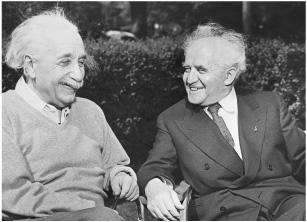

With Israeli Prime Minister David Ben-Gurion in Princeton, 1951
和以色列总理本-古里安在普林斯顿，1951年
The Endless Quest 无尽的求索
The problems of the world were important to Einstein, but the problems of the cosmos helped him to keep earthly matters in perspective. Even though he was producing little of scientific significance, physics rather than politics would remain his defining endeavor until the day he died. One morning when walking to work with his scientific assistant and fellow arms control advocate Ernst Straus, Einstein mused at their ability to divide their time between the two realms. “But our equations are much more important to me,” Einstein added. “Politics is for the present, while our equations are for eternity.”1
世界问题固然对爱因斯坦很重要，但宇宙问题有助于他摆正世俗事务的位置。虽然他在去世前再也没能做出什么重要的科学成果，但他所不懈追求的仍然是物理而非政治。一天早上，他步行前往办公室，与支持军控的科学助手施特劳斯一同工作。他对他们如何在两个领域分配时间进行了思考。“但我们的方程对我更重要，”爱因斯坦说，“政治是暂时的，而方程是永恒的。”
Einstein had officially retired from the Institute for Advanced Study at the end of the war, when he turned 66. But he continued to work in a small office there every day, and he was still able to enlist the aid of loyal assistants willing to pursue what had come to be considered his quaint quest for a unified field theory.
战争结束时，爱因斯坦66岁，这时他已经正式从高等研究院退休。但他每天仍然在那里的一个小办公室继续工作，而且能够得到忠诚助手的帮助，他们愿意追求那种被视为异类的统一场论。
Each weekday, he would wake at a civilized hour, eat breakfast and read the papers, and then around ten walk slowly up Mercer Street to the Institute, trailing stories both real and apocryphal. His colleague Abraham Pais recalled “one occasion when a car hit a tree after the driver suddenly recognized the face of the beautiful old man walking along the street, the black woolen knit cap firmly planted on his long white hair.”2
平曰里，他每天都会按时醒来，吃早餐，读报，10点钟左右从梅瑟街慢慢走到研究院。这样便衍生出许多虚虚实实的故事。他的同事派斯回忆说：“有一次，一个司机忽然认出了这位正在街上行走的慈祥老人，黑色的毛线帽，紧紧戴在花白的头发上。吃惊之际，他的汽车撞在了树上。”
Soon after the war ended, J. Robert Oppenheimer came from Los Alamos to take over as director of the Institute. A brilliant, chain-smoking theoretical physicist, he proved charismatic and competent enough to be an inspiring leader for the scientists who built the atomic bomb. With his charm and biting wit, he tended to produce either acolytes or enemies, but Einstein fell into neither category. He and Oppenheimer viewed each other with a mixture of amusement and respect, which allowed them to develop a cordial though not close relationship.3
战争结束后不久，奥本海默从洛斯阿拉莫斯来到普林斯顿接任研究院院长。他是一位卓越的理论物理学家，烟不离口，在领导科学家制造原子弹方面有超凡的能力。他的魅力和才智使他既赢得朋友，又树敌甚多，不过爱因斯坦两者都不是。他和奥本海默带着愉快和尊敬看待对方，两人的关系既友好，又不那么亲密。
When Oppenheimer first visited the Institute in 1935, he called it a “madhouse” with “solipsistic luminaries shining in separate and hapless desolation.” As for the greatest of these luminaries, Oppenheimer declared, “Einstein is completely cuckoo,” though he seemed to mean it in an affectionate way.4
奥本海默1955年第一次访问研究院，那时他称它为“疯人院”，“一群唯我独尊的名人处在孤独无助的凄凉之中”。爱因斯坦无疑是这些名人中最伟大的一位，奥本海默称他是“完全的疯子”，虽然这样说似乎是为了表达一种挚爱。
Once they became colleagues, Oppenheimer became more adroit at dealing with his luminous charges and his jabs became more subtle. Einstein, he declared, was “a landmark but not a beacon,” meaning he was admired for his great triumphs but attracted few apostles in his current endeavors, which was true. Years later, he provided another telling description of Einstein: “There was always in him a powerful purity at once childlike and profoundly stubborn.”5
成为同事后，奥本海默在对待爱因斯坦时变得更加灵巧，其话语也变得更加微妙。他称爱因斯坦是“一个里程碑，但不是一座灯塔”，意为人们赞叹他的伟大成就，但极少有人在事业上追随他。事实也的确如此。几年以后，他又对爱因斯坦做了另一番生动描述：“他身上总是透出一种强烈的纯粹性，既如孩子般单纯，又极为坚定。”
Einstein became a closer friend, and a walking partner, of another iconic figure at the Institute, the intensely introverted Kurt Gödel, a German-speaking mathematical logician from Brno and Vienna. Gödel was famous for his “incompleteness theory,” a pair of logical proofs that purport to show that any useful mathematical system will have some propositions that cannot be proven true or false based on the postulates of that system.
爱因斯坦与研究院极为内向的另一位偶像式人物哥德尔成了密友，他们经常一起步行。哥德尔讲德语，是一位来自布尔诺和维也纳的数理逻辑学家，以其“不完备性定理”而著名。这两条逻辑定理表明，任何有用的数学系统都将包含一些命题，无法根据该系统的假设被证明为真或为假。
Out of the supercharged German-speaking intellectual world, in which physics and mathematics and philosophy intertwined, three jarring theories of the twentieth century emerged: Einstein’s relativity, Heisenberg’s uncertainty, and Gödel’s incompleteness. The surface similarity of the three words, all of which conjure up a cosmos that is tentative and subjective, oversimplifies the theories and the connections between them. Nevertheless, they all seemed to have philosophical resonance, and this became the topic of discussion when Gödel and Einstein walked to work together.6
人才辈出的德语思想界向来有将物理学和数学与哲学结合在一起的传统，20世纪出现了三种不和谐的理论：爱因斯坦的相对论、海森伯的不确定性原理和哥德尔的不完备性定理。这三个词表面的相似性（都唤来了一个不确定的、主观的宇宙）过度简化了这些理论及其相互关系。不过，它们似乎都对哲学产生了影响，这成了哥德尔和爱因斯坦在前往办公室途中的讨论话题。
They were very different personalities. Einstein was filled with good humor and sagacity, both qualities lacking in Gödel, whose intense logic sometimes overwhelmed common sense. This was on glorious display when Gödel decided to become a U.S. citizen in 1947. He took his preparation for the exam very seriously, studied the Constitution carefully, and (as might be expected by the formulator of the incompleteness theory) found what he believed was a logical flaw. There was an internal inconsistency, he insisted, that could allow the entire government to degenerate into tyranny.
他们的个性非常不同。爱因斯坦充满了幽默和睿智，这些都是哥德尔所缺乏的，他深刻的逻辑有时会推翻常识。这一点在哥德尔1947年加入美国国籍时表现得淋漓尽致。他非常认真地准备考试，仔细研究宪法，发现了一个他所谓的逻辑缺陷（这倒是符合人们对不完备性理论的提出者的预期）。他坚持说，这种内在的不一致性将使整个政府沧落为专制。
Concerned, Einstein decided to accompany—or chaperone—Gödel on his visit to Trenton to take the citizenship test, which was to be administered by the same judge who had done so for Einstein. On the drive, he and a third friend tried to distract Gödel and dissuade him from mentioning this perceived flaw, but to no avail. When the judge asked him about the Constitution, Gödel launched into his proof that its internal inconsistency made a dictatorship possible. Fortunately, the judge, who by now cherished his connection to Einstein, cut Gödel off. “You needn’t go into all that,” he said, and Gödel’s citizenship was saved.7
爱因斯坦不放心，决定陪同（或陪护）哥德尔到特伦顿参加入籍考试，主考官正是给爱因斯坦考试的那位法官。他和另一位朋友在途中试图让哥德尔分散精力，劝他不要提这个缺陷，但不管用。当主考官问他对宪法有何看法时，哥德尔开始论证其内在的不一致性有可能会导致独裁。幸运的是，考虑到他与爱因斯坦的关系，主考官及时打断了他。“你不必详谈了。”他说。哥德尔的国籍保住了。
During their walks, Gödel explored some of the implications of relativity theory, and he came up with an analysis that called into question whether time, rather than merely being relative, could be said to exist at all. Einstein’s equations, he figured, could describe a universe that was rotating rather than (or in addition to) expanding. In such a case, the relationship between space and time could become, mathematically, mixed up. “The existence of an objective lapse of time,” he wrote, “means that reality consists of an infinity of layers of ‘now’ which come into existence successively. But if simultaneity is something relative, each observer has his own set of ‘nows,’ and none of these various layers can claim the prerogative of representing the objective lapse of time.”8
哥德尔研究了相对论的一些推论。通过分析，他不仅认为时间是相对的，甚至对是否可以说有时间这种东西存在都表示怀疑。他指出，爱因斯坦的方程可以描述一个旋转的而非（或同时）膨胀的宇宙。在这种情况下，空间与时间的关系将在数学上混在一起。他写道：“存在着时间的客观流逝意味着，实在是由相继产生的无穷多个‘现在’构成的。然而如果同时性是相对的，那么每一个观察者都有他自己的‘现在’，没有哪一组‘现在’有权代表时间的客观流逝。”
As a result, Gödel argued, time travel would be possible. “By making a round trip on a rocket ship in a sufficiently wide curve, it is possible in these worlds to travel into any region of the past, present and future, and back again.” That would be absurd, he noted, because then we could go back and chat with a younger version of ourselves (or, even more discomforting, our older version could come back and chat with us). “Gödel had achieved an amazing demonstration that time travel, strictly understood, was consistent with the theory of relativity,” writes Boston University philosophy professor Palle Yourgrau in his book on Gödel’s relationship with Einstein, World Without Time. “The primary result was a powerful argument that if time travel is possible, time itself is not.”9
哥德尔的结论是，时间旅行是可能的。“在这些世界中，只要乘坐宇宙飞船沿着足够宽广的曲线做一次往返旅行，就有可能进入过去、现在和未来的任何区域，然后再回来。”他认为这很荒谬，因为那样一来，我们就可以回去与年轻时的我们聊天（或者更糟的是，老年的我们会回来与我们聊天）。“哥德尔令人惊讶地表明，严格意义上的时间旅行与相对论是一致的，”波士顿大学哲学教授帕勒·尤格劳在关于哥德尔与爱因斯坦关系的书《没有时间的世界》（World Without Time）中说，“其主要结果是强有力地证明了，如果时间旅行是可能的，那么时间本身就不存在。”
Einstein responded to Gödel’s essay along with a variety of others that had been collected in a book, and he seemed to be mildly impressed but also not totally engaged by the argument. In his brief assessment, Einstein called Gödel’s “an important contribution” but noted that he had thought of the issue long ago and “the problem here involved disturbed me already.” He implied that although time travel may be true as a mathematical conceivability, it might not be possible in reality.“It will be interesting to weigh whether these are not to be excluded on physical grounds,” Einstein concluded.10
爱因斯坦对哥德尔的论证很钦佩，但兴趣并不大。他简短地评价说，这是“一项重要贡献”，但他很早以前就思考过这个问题，“这里所涉及的问题已经困扰过我”。他暗示，虽然时间旅行在数学上可以设想为真，但在现实中是不可能的。“看看能否基于物理的理由将它们排除是很有趣的。”爱因斯坦说。
For his part, Einstein remained focused on his own white whale, which he pursued not with the demonic drive of Ahab but the dutiful serenity of Ishmael. In his quest for a unified field theory, he still had no compelling physical insight—such as the equivalence of gravity and acceleration, or the relativity of simultaneity—to guide his way, so his endeavors remained a groping through clouds of abstract mathematical equations with no ground lights to orient him. “It’s like being in an airship in which one can cruise around in the clouds but cannot see clearly how one can return to reality, i.e., earth,” he lamented to a friend.11
至于他自己，则仍在努力完成那个艰巨的任务。他的求索并非凭借亚哈（Ahab） 魔鬼般的冲动，而是带着以实玛利（Ishmael） 的忠诚与镇定。在探索统一场论的过程中，他一直没有获得像引力与加速等效，或同时的相对性那样令人信服的物理洞见，所以他仍然是在抽象的数学方程中苦苦摸索，没有航标灯为他导向。“这就像置身于一艘飞艇中，虽然可以在云端游弋，却看不清如何才能回到现实中的地球。”他对朋友悲叹道。
His goal, as it had been for decades, was to come up with a theory that encompassed both the electromagnetic and the gravitational fields, but he had no compelling reason to believe that they in fact had to be part of the same unified structure, other than his intuition that nature liked the beauty of simplicity.
他数十年来的目标始终如一，那就是提出一种能够同时包含电磁场和引力场的理论。然而，认为它们必须同属于一种统一的结构，这只是他的直觉，即自然喜欢美和简单性，除此之外并无令人信服的理由。
Likewise, he was still hoping to explain the existence of particles in terms of a field theory by finding permissible pointlike solutions to his field equations. “He argued that if one believed wholeheartedly in the basic idea of a field theory, matter should enter not as an interloper but as an honest part of the field itself,” recalled one of his Princeton collaborators, Banesh Hoffmann. “Indeed, one might say that he wanted to build matter out of nothing but convolutions of spacetime.” In the process he used all sorts of mathematical devices, but constantly searched for others. “I need more mathematics,” he lamented at one point to Hoffmann.12
他也希望能够找到他的场方程可以允许的点状解，从而用场论说明粒子的存在。“他认为，如果我们对场论的基本观念深信不疑，那么物质就应当是场的实实在在的一部分，而不应强行加入进来，”他在普林斯顿的合作者霍夫曼回忆说，“事实上，或者可以说他希望仅仅从时空弯曲把物质构建出来。”在这一过程中，他使用了各种数学手段，但仍觉不够。“我需要更多的数学。”他曾向霍夫曼抱怨说。
Why did he persist? Deep inside, such disjunctures and dualities—different field theories for gravity and electromagnetism, distinctions between particles and fields—had always discomforted him. Simplicity and unity, he intuitively believed, were hallmarks of the Old One’s handiwork. “A theory is more impressive the greater the simplicity of its premises, the more different things it relates, and the more expanded its area of applicability,” he wrote.13
他为什么坚持这样做？引力场理论与电磁场理论的差异，粒子与场的区分，这些分裂和二元性一直都使他的内心感到不安。他直觉地感到，简单性和统一性是“老头子”（Old One）的产品特征。“一种理论的前提的简单性越大，所涉及的事物的种类越多，应用范围越广，它给人的印象也就越深。”他写道。
In the early 1940s, Einstein returned for a while to the five-dimensional mathematical approach that he had adopted from Theodor Kaluza two decades earlier. He even worked on it with Wolfgang Pauli, the quantum mechanics pioneer, who had spent some of the war years in Princeton. But he could not get his equations to describe particles.14
20世纪40年代初，爱因斯坦暂时回到了他20年前从卡鲁扎那里得知的五维的数学方案。他甚至同量子力学的先驱泡利一起做了研究，泡利在战争期间曾在普林斯顿待过几年。但所得到的方程仍然无法描述粒子。
So he moved on to a strategy dubbed “bivector fields.” Einstein seemed to be getting a little desperate. This new approach, he admitted, might require surrendering the principle of locality that he had sanctified in some of his thought-experiments assaulting quantum mechanics.15 In any event, it was soon abandoned as well.
于是他继而采取了“双向量场”方案。爱因斯坦似乎变得有些孤注一掷。他承认，这种新方案可能要求放弃他在攻击量子力学的一些思想实验中所认可的定域性原理。 无论如何，这种方案不久也被放弃了。
Einstein’s final strategy, which he pursued for the final decade of his life, was a resurrection of one he had tried during the 1920s. It used a Riemannian metric that was not assumed to be symmetric, which opened the way for sixteen quantities. Ten combinations of them were used for gravity, and the remaining ones for electromagnetism.
爱因斯坦在生命中最后十年所采取的策略是复兴他在20世纪20年代曾经做过的一种尝试。他使用了一种不对称的黎曼度规，有16个分量。其中10个量表示引力，6个量表示电磁力。
Einstein sent early versions of this work to his old comrade Schrödinger. “I am sending them to nobody else, because you are the only person known to me who is not wearing blinders in regard to the fundamental questions in our science,” Einstein wrote. “The attempt depends on an idea that at first seems antiquated and unprofitable, the introduction of a non-symmetrical tensor ... Pauli stuck his tongue out at me when I told him about it.”16
他把早期的工作成果寄给了老同事薛定谔。“我只把它寄给了你，因为你是我所知道的唯一能够看清楚我们科学中基本问题的人，”爱因斯坦写道，“这一尝试所依赖的思想初看起来有些过时，似乎用处不大，即引入一种非对称张量……我把这种想法告诉泡利时，他朝我吐了吐舌头。”
Schrödinger spent three days poring over Einstein’s work and wrote back to say how impressed he was. “You are after big game,” he said.
薛定谔花了三天时间仔细考虑了爱因斯坦的工作，回信说他十分钦佩。“你在搜寻一头大猎物。”他说。
Einstein was thrilled with such support. “This correspondence gives me great joy,” he replied, “because you are my closest brother and your brain runs so similarly to mine.” But he soon began to realize that the gossamer theories he was spinning were mathematically elegant but never seemed to relate to anything physical. “Inwardly I am not so certain as I previously asserted,” he confessed to Schrödinger a few months later. “We have squandered a lot of time on this, and the result looks like a gift from the devil’s grandmother.”17
这种支持让爱因斯坦很激动。“这封信使我欢欣鼓舞，”他回信说，“因为你是我最亲密的兄弟，我们的想法很类似。”可惜没过多久他就意识到，这种尚未成形的脆弱理论虽然在数学上很优雅，但似乎无法与任何物理的东西联系在一起。“从我内心来讲，我对它不像以前那样肯定了，”他几个月后向薛定谔坦言，“我们在这上面耗费了许多时间，得到的结果却像是魔鬼的祖母给予的礼物。”
And yet he soldiered on, churning out papers and producing the occasional headline. When a new edition of his book, The Meaning of Relativity, was being prepared in 1949, he added the latest version of the paper he had shown Schrödinger as an appendix. The New York Times reprinted an entire page of complex equations from the manuscript, along with a front-page story headlined “New Einstein Theory Gives a Master Key to Universe: Scientist, after 30 Years’ Work, Evolves Concept That Promises to Bridge Gap between the Star and the Atom.”18
不过，他仍然迎难而上，艰苦地写出了几篇论文，偶尔还上了新闻大标题。当《相对论的意义》一书于1949年再版时，他把给薛定谔看的论文的最新版本《引力理论的推广》作为附录补充了进去。《纽约时报》用一整版的篇幅刊登了手稿中复杂的方程，并在头版配以大标题“爱因斯坦的新理论是宇宙的万能钥匙；经过30年的工作，科学家提出了可以沟通星体与原子的概念”。
But Einstein soon realized that it still wasn’t right. During the six weeks between when he submitted the chapter and when it went to the printers, he had second thoughts and revised it yet again.
但没过多久，爱因斯坦意识到它依然不正确。在提交论文和刊印之间的六个星期里，他又有了新的想法，并再次进行了修改。
In fact, he continued to revise the theory repeatedly, but to no avail. His growing pessimism was visible in the lamentations he sent to his old friend from the Olympia Academy days, Maurice Solovine, then Einstein’s publisher in Paris. “I shall never ever solve it,” he wrote in 1948. “It will be forgotten and must later be rediscovered again.”Then, the following year: “I am uncertain as to whether I was even on the right track. The current generation sees in me both a heretic and a reactionary who has, so to speak, outlived himself.” And, with some resignation, in 1951: “The unified field theory has been put into retirement. It is so difficult to employ mathematically that I have not been able to verify it. This state of affairs will last for many more years, mainly because physicists have no understanding of logical and philosophical arguments.”19
事实上，他对理论一再进行修改，但都没有成功。他的悲观情绪日渐浓厚，这可见于他给老友索洛文（当时在巴黎做爱因斯坦的出版商）的信。“这个问题我永远解决不了了，”他1948年写道，“它将被遗忘，以后肯定会被重新发现。”一年后他又说：“我不敢肯定我走的路是否正确。我的同时代的人把我看成异端和叛逆分子，因为自己活久了人们已把我忘了。”1951年，他有些无奈地说：“统一场论的研究已经不再进行了。它在数学上过于困难，我无法证明它。这种情况还将持续很多年，主要是因为物理学家们不理解逻辑和哲学论证。”
Einstein’s quest for a unified theory was destined to produce no tangible results that added to the framework of physics. He was able to come up with no great insights or thought experiments, no intuitions about underlying principles, to help him visualize his goal. “No pictures came to our aid,” his collaborator Hoffmann lamented. “It is intensely mathematical, and over the years, with helpers and alone, Einstein surmounted difficulty after difficulty, only to find new ones awaiting him.”20
爱因斯坦对统一理论的求索注定不会给物理学体系带来什么切实的成果。他没能获得什么伟大的洞见或思想实验，直觉不到背后的原理来帮助他实现目标。“没有图像能够帮助我们。”他的合作者霍夫曼悲叹道，“它的数学非常高深。多年以来，或是和助手一起，或是孤身一人，爱因斯坦克服了一个又一个困难，最后发现还有新的困难在等待着他。”
Perhaps the search was futile. And if it turns out a century from now that there is indeed no unified theory to be found, it will also look misconceived. But Einstein never regretted his dedication to it. When a colleague asked him one day why he was spending—perhaps squandering—his time in this lonely endeavor, he replied that even if the chance of finding a unified theory was small, the attempt was worthy. He had already made his name, he noted. His position was secure, and he could afford to take the risk and expend the time. A younger theorist, however, could not take such a risk, for he might thus sacrifice a promising career. So, Einstein said, it was his duty to do it.21
也许这种探索是徒劳的。假如再过一个世纪仍然找不到统一理论，那么它仍将受到误解。但爱因斯坦从不后悔他的努力。有一天，一位同事问他为什么要把时间花在（也许是浪费在）这项孤独的事业中，他回答说，即使找到统一理论的希望很渺茫，这种努力也很值得。他说自己已经功成名就，不必担心丢掉饭碗，花时间冒这个险还担负得起。但年轻理论家这样做就太危险了，因为他很可能会因此而毁掉自己的前途。于是爱因斯坦说，自己有义务这样做。
Einstein’s repeated failures in seeking a unified theory did not soften his skepticism about quantum mechanics. Niels Bohr, his frequent sparring partner, came to the Institute for a stay in 1948 and spent part of his time writing an essay on their debates at the Solvay Conferences before the war.22 Struggling with the article in his office one floor above Einstein’s, he developed writer’s block and called in Abraham Pais to help him. As Bohr paced furiously around an oblong table, Pais coaxed him and took notes.
虽然爱因斯坦在探索统一场论的过程中接二连三地失败，但这并没有使他改变对量子力学的怀疑态度。1948年，他昔日的论战对手玻尔到研究院访问，并撰文记述他们在战前索尔维会议上的争论。 玻尔在爱因斯坦楼上的办公室里绞尽脑汁构思文章，其间因心理阻滞而无法写下去，便叫派斯来帮忙。玻尔围着一张长条桌团团转，派斯则一边用好话劝他，一边做着笔记。
When he got frustrated, Bohr sometimes would simply sputter the same word over and over. Soon he was doing so with Einstein’s name. He walked to the window and kept muttering, over and over, “Einstein . . . Einstein . . .”
玻尔觉得沮丧时，有时会一遍遍地念叨同一个词。这一次，轮到了爱因斯坦的名字。他走到窗边不住地念叨：“爱因斯坦……爱因斯坦……”
At one such moment, Einstein softly opened the door, tiptoed in, and signaled to Pais not to say anything. He had come to steal a bit of tobacco, which his doctor had ordered him not to buy. Bohr kept muttering, finally spurting out one last loud “Einstein” and then turning around to find himself staring at the cause of his anxieties. “It is an understatement to say that for a moment Bohr was speechless,” Pais recalled. Then, after an instant, they all burst into laughter.23
这时，爱因斯坦悄悄开门走了进来，并向派斯示意不要出声。他偷拿了一点医生不让他买的烟草。玻尔喊出最后一声“爱因斯坦”之后，一回头，发现了使他产生焦虑的始作俑者。“毫不夸张地说，玻尔好一阵子说不出话来。”派斯回忆说。又过了一会儿，他们全都放声大笑。
Another colleague who tried and failed to convert Einstein was John Wheeler, Princeton University’s renowned theoretical physicist. One afternoon he came by Mercer Street to explain a new approach to quantum theory (known as the sum-over-histories approach) that he was developing with his graduate student, Richard Feynman. “I had gone to Einstein with the hope to persuade him of the naturalness of the quantum theory when seen in this new light,” Wheeler recalled. Einstein listened patiently for twenty minutes, but when it was over repeated his very familiar refrain: “I still cannot believe that the good Lord plays dice.”
另一位试图让爱因斯坦改变想法但未获成功的人是普林斯顿大学著名的理论物理学家惠勒。一天下午，惠勒来到梅瑟街，向爱因斯坦解释他和他的研究生费曼正在思考的一种量子理论新方案。“我希望让爱因斯坦相信，从这种新的角度看，量子理论是十分自然的。”惠勒回忆说。爱因斯坦耐心地听了20分钟，但还是重复了他那句名言：“我不相信善良的上帝会掷骰子。”
Wheeler showed his disappointment, and Einstein softened his pronouncement slightly. “Of course, I may be wrong,” he said in a slow and humorous cadence. Pause. “But perhaps I have earned the right to make my mistakes.” Einstein later confided to a woman friend, “I don’t think I’ll live to find out who is correct.”
惠勒有些失望，爱因斯坦的口气稍微减弱了一些。“当然，我可能是错的，”他用舒缓和幽默的语气说，“不过我也许拥有了犯错误的权利。”爱因斯坦后来向一位女性朋友坦言：“我不认为我在有生之年能够看到谁是正确的。”
Wheeler kept coming back, sometimes bringing his students, and Einstein admitted that he found many of his arguments “sensible.” But he was never converted. Near the end of his life, Einstein regaled a small group of Wheeler’s students. When the talk turned to quantum mechanics, he once again tried to poke holes in the idea that our observations can affect and determine realities. “When a mouse observes,” Einstein asked them, “does that change the state of the universe?”24
惠勒后来又来过多次，有时还带着学生。爱因斯坦承认惠勒的许多论证很精巧，但他从未改变自己的想法。晚年的爱因斯坦曾经宴请过惠勒的几位学生。当谈到量子力学时，他再次质疑我们的观察可以影响和确定实在这种观点。爱因斯坦问他们：“老鼠的观察会改变宇宙的状态吗？”
The Lion in Winter 冬狮
Mileva Mari , her health deteriorating due to a succession of minor strokes, was still living in Zurich and trying to take care of their institutionalized son, Eduard, whose behavior had become increasingly erratic and violent. Financial problems again plagued her and revived the tension with her former husband. The portion of the money that he had put into trust for her in America from the Nobel Prize had slipped away during the Depression, and two of her three apartment houses had been sold to help pay for Eduard’s care. By late 1946, Einstein was pushing to sell the remaining house and give control of the money to a legal guardian who would be appointed for Eduard. But Mari had the usufruct of the house and its proceeds, as well as power of attorney over it, and she was terrified of surrendering any control.25
, her health deteriorating due to a succession of minor strokes, was still living in Zurich and trying to take care of their institutionalized son, Eduard, whose behavior had become increasingly erratic and violent. Financial problems again plagued her and revived the tension with her former husband. The portion of the money that he had put into trust for her in America from the Nobel Prize had slipped away during the Depression, and two of her three apartment houses had been sold to help pay for Eduard’s care. By late 1946, Einstein was pushing to sell the remaining house and give control of the money to a legal guardian who would be appointed for Eduard. But Mari had the usufruct of the house and its proceeds, as well as power of attorney over it, and she was terrified of surrendering any control.25
由于几次小的中风，米列娃的健康每况愈下。她仍然住在苏黎世，照料正在住院的儿子爱德华，他的行为已经变得愈发怪异和暴力。她又开始受到经济问题的困扰，与爱因斯坦的关系也开始紧张起来。爱因斯坦在美国从诺贝尔奖金中为她投到信托账户中的钱在大萧条时期已经损值大半。为了给爱德华治病，她卖了三幢公寓房中的两幢。到了1946年年底，爱因斯坦不得不卖掉剩下的那幢房子，让爱德华的法定监护人来管理财务。不过，米列娃仍然拥有房子的用益权和委托书，她害怕失去任何控制。
One cold day later that winter, she slipped on the ice on the way to see Eduard and ended up lying unconscious until strangers found her. She knew she was going to die soon, and she had recurring nightmares about struggling through the snow, unable to reach Eduard. She was panicked about what would happen to him, and wrote heart-wrenching letters to Hans Albert.26
一个寒冷的冬日，她沿着结冰的小路去看望爱德华，不幸中途摔倒，失去了知觉，后被路人救起。她自知不久于人世，经常梦见在雪中艰难前行，但仍然无法见到爱德华的情形。她担心爱德华可能遭遇什么不测，常给汉斯·阿尔伯特写一些令人揪心的信。
Einstein succeeded in selling her house by early 1948, but with her power of attorney she blocked the proceeds from being sent to him. He wrote to Hans Albert, giving him all the details and promising him that, whatever happened, he would take care of Eduard “even if it costs me all my savings.”27 That May, Mari had a stroke and lapsed into a trance in which she repeatedly muttered only “No, no!” until she died three months later. The money from the sale of her apartment, 85,000 Swiss francs, was found under her mattress.
1948年年初，爱因斯坦总算卖出了米列娃的房子，但由于有委托书，米列娃没有把收益寄给他。他给汉斯·阿尔伯特写信说了详细情况，并向他保证，无论发生什么事情，他都会照顾爱德华，“即使倾家荡产也在所不惜”。 那年5月，米列娃又一次中风，精神恍惚，嘴里不断念叨着“不，不！”直到三个月后离开人世。后来，人们在她的床垫下面发现了卖房所得的85000瑞士法郎。
Eduard lapsed into a daze and never spoke of his mother again. Carl Seelig, a friend of Einstein’s who lived nearby, visited him frequently and sent back regular reports to Einstein. Seelig hoped to get him to make contact with his son, but he never did. “There is something blocking me that I am unable to analyze fully,” Einstein told Seelig. “I believe I would be arousing painful feelings of various kinds in him if I made an appearance in whatever form.”28
爱德华神志不清，不再谈起他的妈妈。住在附近的爱因斯坦的朋友塞利希经常去看他，并给爱因斯坦带回消息。塞利希希望他能够与儿子进行接触，但他从未这样做。“有一种东西阻挡着我，我也说不清楚它是什么，”爱因斯坦对塞利希说，“我相信，无论我以什么方式露面，都会在他心里唤起各种痛苦的情感。”
Einstein’s own health began to decline in 1948 as well. For years he had been plagued by stomach ailments and anemia, and late that year, after an attack of sharp pains and vomiting, he checked into the Jewish Hospital in Brooklyn. Exploratory surgery revealed an aneurysm in the abdominal aorta,* but doctors decided there was not much they could do about it. It was assumed, correctly, that it was likely to kill him one day, but in the meantime he could live on borrowed time and a healthy diet.29
1948年，爱因斯坦的健康状况也开始下降。多年来，他一直受到胃痛和贫血的折磨。那年年底，他感到胃剧痛，呕吐不止，随即住进布鲁克林的犹太医院进行检查。经诊断，他的腹部主动脉里长了一个动脉瘤， 医生们对此有些束手无策。他们（正确地）认为，这种病有一天也许会夺去他的生命，不过只要注意饮食健康，他也可能活得更久。
To recuperate, he went on the longest trip he would make during his twenty-two years as a Princeton resident: down to Sarasota, Florida. For once, he successfully avoided publicity. “Einstein Elusive Sarasota Visitor,” the local paper lamented.
为了康复，他做了一次长途旅行，最远到达佛罗里达的萨拉索塔（Sarasota），这将是他在普林斯顿居住的22年里距离最长的旅行。有一次，他成功地躲过了公众的注意。“爱因斯坦悄悄到访萨拉托加。”当地的报纸埋怨说。
Helen Dukas accompanied him. After Elsa’s death, she had become even more of a loyal guardian, and she even shielded Einstein from letters written by Hans Albert’s daughter, Evelyn. Hans Albert suspected that Dukas may have had an affair with his father, and said so to others. “On many occasions, Hans Albert told me of his long-held suspicion,” family friend Peter Bucky later recalled. But others who knew Dukas found the suggestion to be implausible.30
杜卡斯陪伴着他。爱尔莎去世后，她不仅是一个忠诚的护卫者，而且帮爱因斯坦拦下了汉斯·阿尔伯特的女儿伊夫林写的信。汉斯·阿尔伯特怀疑杜卡斯可能与他的父亲有染，而且跟别人也这么说。“汉斯·阿尔伯特多次跟我讲，他很早以前就怀疑这一点。”爱因斯坦一家的朋友彼得·布基后来回忆说。但其他认识杜卡斯的人都认为这种说法难以置信。
By then, Einstein had become much friendlier with his son, now a respected engineering professor at Berkeley. “Whenever we met,” Hans Albert later recalled of his trips east to see his father, “we mutually reported on all the interesting developments in our field and in our work.” Einstein particularly loved learning about new inventions and solutions to puzzles. “Maybe both, inventions and puzzles, reminded him of the happy, carefree, and successful days at the patent office in Bern,” said Hans Albert.31
那时，爱因斯坦与儿子的关系已经好多了，汉斯·阿尔伯特现在是一位受人尊敬的伯克利的工程教授。汉斯·阿尔伯特曾经东行去看望父亲，他后来回忆说：“我们见面时总会通报各自的领域和工作中有趣的进展。”爱因斯坦特别喜欢了解新发明和如何解决难题。“也许发明和难题都会让他想起在伯尔尼专利局度过的无忧无虑、卓有成就的时光。”汉斯·阿尔伯特说。
Einstein’s beloved sister, Maja, the closest intimate of his life, was also in declining health. She had come to Princeton when Mussolini enacted anti-Jewish laws, but her husband, Paul Winteler, from whom she had been drifting apart for many years,32 moved to Switzerland to be with his own sister and her husband, Michele Besso. They corresponded often, but never rejoined one another.
爱因斯坦的妹妹玛雅的健康也在恶化。玛雅是他生命中关系最近的人了。墨索里尼颁布反犹太人的法令后，她来到普林斯顿，而与之分居多年的丈夫保罗·温特勒则搬到了瑞士，与他的妹妹和妹夫贝索住在一起。 他们时常通信，但再也没能团聚。
Maja began, as Elsa had, to look more like Einstein, with radiating silver hair and a devilish smile. The inflection of her voice and the slightly skeptical wry tone she used when asking questions were similar to his. Although she was a vegetarian, she loved hot dogs, so Einstein decreed that they were a vegetable, and that satisfied her.33
和爱尔莎一样，玛雅也开始模仿爱因斯坦的打扮了：放射状的银发，淘气的微笑。甚至是在问问题时，她所使用的腔调和略带讥讽的语气也与爱因斯坦相似。她是素食主义者，却喜欢吃热狗，爱因斯坦便裁定热狗是一种蔬菜，这让她很满意。
Maja had suffered a stroke and, by 1948, was confined to bed most of the time. Einstein doted on her as he did no other person. Every evening he read aloud to her. Sometimes the fare was heavy, such as the arguments of Ptolemy against Aristarchus’s opinion that the world rotates around the sun. “I could not help thinking of certain arguments of present-day physicists: learned and subtle, but without insight,” he wrote Solovine about that evening. Other times, the readings were lighter but perhaps just as revealing, such as the evenings he read from Don Quixote; he sometimes compared his own quixotic parries against the prevailing windmills of science with that of the old knight with a ready lance.34
玛雅不幸中风，到了1948年不得不整日卧病在床。爱因斯坦对她悉心照料，这在别人那里是没有的。每天晚上，爱因斯坦都会读书给她听。有时涉及的话题很严肃，比如托勒密反对阿里斯塔克日心说的论证。“我不禁想起了当今物理学家的一些论证：深奥而微妙，但没有洞察力。”他写信给索洛文谈了那天晚上的情形。有时阅读的内容轻松一些，但同样能够给人以启发，比如《堂吉诃德》，他有时将自己反对流行的科学观念比作堂吉诃德随时准备拿长矛与风车战斗。
When Maja died in June 1951, Einstein was grief-stricken. “I miss her more than can be imagined,” he wrote a friend. He sat on the back porch of his Mercer Street home for hours, pale and tense, staring into space. When his stepdaughter Margot came to console him, he pointed to the sky and said, as if reassuring himself, “Look into nature, and then you will understand it better.”35
1951年6月，玛雅去世，爱因斯坦极度悲伤。“我对她的思念超乎想象。”他写信给一位朋友。他脸色苍白，长时间坐在家里的后阳台上，神情严肃地仰望长空。他的继女玛戈特来安慰他，他用手指着天空，就好像在安慰自己说：“好好看看大自然，你就更能理解它了。”
Margot had likewise left her husband, who responded by writing, as he had long wanted to, an unauthorized biography of Einstein. She worshipped Einstein, and each year they grew closer. He found her presence charming. “When Margot speaks,” he said, “you see flowers growing.”36
玛戈特也离开了丈夫（他写了一本爱因斯坦传记，但未被认可）。她很崇拜爱因斯坦，随着时间的推移，他们的关系越来越近。爱因斯坦觉得玛戈特很有魅力。“玛戈特说话时，”他说，“你看见花儿在生长。”
His ability to engender and feel such affection belied his reputation for being emotionally distant. Both Maja and Margot preferred living with him to living with their own husbands as they got older. He had been a difficult husband and father because he did not take well to any constricting bonds, but he could also be intense and passionate, both with family and friends, when he found himself engaged rather than confined.
他能够唤起和感受到这种挚爱，表明他并不像通常认为的那样在感情上与人疏远。玛雅和玛戈特上了年纪之后，都更愿意与他一起生活，而不是与丈夫住在一起。他曾经是一位不易相处的丈夫和父亲，因为任何约束性的关系都会使他不舒服，然而当他投入其中而不是受到限制时，也可以热情洋溢和充满感情，无论是对家人还是朋友。
Einstein was human, and thus both good and flawed, and the greatest of his failings came in the realm of the personal. He had lifelong friends who were devoted to him, and he had family members who doted on him, but there were also those few—Mileva and Eduard foremost among them—whom he simply walled out when the relationship became too painful.
爱因斯坦毕竟是人，既有优点又有缺点，他最大的失败来自于私人领域。他有几位终生不渝的朋友，家里也有人疼爱，但有少数人（特别是米列娃和爱德华），当关系变得过于令人痛苦时，他干脆置之不理。
As for his colleagues, they saw his kindly side. He was gentle and generous with partners and subordinates, both those who agreed with him and those who didn’t. He had deep friendships lasting for decades. He was unfailingly benevolent to his assistants. His warmth, sometimes missing at home, radiated on the rest of humanity. So as he grew old, he was not only respected and revered by his colleagues, he was loved.
至于他的同事，则看到了他温和的一面。他很和蔼，对同伴和下属非常慷慨，对助手总是很慈祥，无论这些人是否同意他的看法。他与一些人的友谊持续了很多年。他的热心（有时在家里看不到）使所有人感到温暖。因此，随着他慢慢老去，周围的同事对他不仅尊敬，而且爱戴。
They honored him, with the blend of scientific and personal camaraderie he had enjoyed since his student days, at a seventieth birthday convocation upon his return from his Florida recuperation. Although the talks were supposed to focus on Einstein’s science, most dwelled on his sweetness and humanity. When he walked in, there was a hush, then thunderous applause. “Einstein just had no sense at all about what absolute reverence there was for him,” one of his assistants recalled.37
他从佛罗里达疗养回来后，在人们为他举行的70岁生日宴会上，他感受到了那种事业和生活上的友情，从学生时代起，这种友情就一直伴随着他。尽管按照预定的计划，讨论的话题本应集中在爱因斯坦的科学，但大多数人还是谈了他的可爱和善良。当他步入会场时，人们安静了下来，接着爆发出雷鸣般的掌声。“爱因斯坦根本不知道人们对他有多么敬重。”他的一位助手回忆说。
His closest friends at the Institute bought him a present, an advanced AM-FM radio and high-fidelity record player, which they installed in his home secretly when he was at work one day. Einstein was thrilled and used it not only for music but for news. In particular, he liked to catch Howard K. Smith’s commentaries.
作为生日礼物，研究院的朋友们给他买了一台AM-FM高级收音机和高保真电唱机。有一天在他工作时，他们悄悄把这台机器装上了。爱因斯坦很感动，不仅用它来听音乐，还听新闻。他特别喜欢听霍华德·史密斯的电台评论。
He had pretty much given up the violin by then. It was too hard on his aging fingers. Instead, he focused on the piano, which he was not quite as good at playing. Once, after repeatedly stumbling on a passage, he turned to Margot and smiled. “Mozart wrote such nonsense here,” he said.38
那时他已经基本上不再演奏小提琴，他老迈的手指已经很难完成这项任务。他转而弹奏自己并不十分擅长的钢琴。有一次，有一节旋律总是弹不过去，他转回头看了看玛戈特，笑着说：“莫扎特在这里乱写一气。”
He came to look even more like a prophet, with his hair getting longer, his eyes a bit sadder and more weary. His face grew more deeply etched yet somehow more delicate. It showed wisdom and wear but still a vitality. He was dreamy, as he was when a child, but also now serene.
他现在看起来更像是一个先知：长长的头发，眼神中带着些许忧伤和疲倦，面孔痩削了许多，显示出智慧和沧桑，但也更为安详。他仍和年轻时一样喜欢幻想，只是现在多了一份宁静。
“I am generally regarded as sort of a petrified object,” he noted to Max Born, then a professor in Edinburgh, one of those friends whose affection had lasted so long. “I find this role not too distasteful, as it corresponds very well with my temperament ...I simply enjoy giving more than receiving in every respect, do not take myself nor the doings of the masses seriously, am not ashamed of my weaknesses and vices, and naturally take things as they come with equanimity and humor.”39
“人们一般认为我冥顽不化，”他对当时在爱丁堡做教授的老友玻恩说，“我觉得这种角色并不坏，因为它非常符合我的性情……在任何方面我都更愿意给予而不是接受，我不太把自己或大众的做法当回事，对我的弱点和恶习并不感到羞愧，而是带着幽默的心情对事物泰然处之。”
Israel’s Presidency 以色列总统
Before the Second World War, Einstein had stated his opposition to a Jewish state when speaking to three thousand celebrants at a Manhattan hotel seder. “My awareness of the essential nature of Judaism resists the idea of a Jewish state with borders, an army, and a measure of temporal power,” he said. “I am afraid of the inner damage Judaism will sustain—especially from the development of a narrow nationalism within our ranks. We are no longer the Jews of the Maccabee period.”40
第二次世界大战以前，爱因斯坦曾经在曼哈顿的康莫多旅馆举行的逾越节庆祝会上向3000位来宾致辞，反对建立犹太国。“我所认识到的犹太民族的本性是同一个有着边界、军队和世俗权力的犹太国的思想相抵触的，”他说，“我担心对犹太教的内部损害——特别是我们自己的队伍中发展起来的一种狭隘的民族主义所造成的损害——会持续下去。我们已经不再是马加比（Maccabee） 时代的犹太人了。”
After the war, he took the same stance. When he testified in Washington in 1946 to an international committee looking into the situation in Palestine, he denounced the British for pitting Jews against Arabs, called for more Jewish immigration, but rejected the idea that the Jews should be nationalistic. “The State idea is not in my heart,” he said in a quiet whisper that reverberated through the shocked audience of ardent Zionists. “I cannot understand why it is needed.”41 Rabbi Stephen Wise was flabbergasted that Einstein would break ranks with true Zionists at such a public hearing, and he got him to sign a clarifying statement that was, in fact, not clarifying at all.
战后，他的立场依然没有改变。1946年，他在华盛顿向一个研究巴勒斯坦局势的国际委员会作证时，指责英国人挑拨犹太人与阿拉伯人的关系，呼吁让更多的犹太人移民入境，但并不认为犹太人应当组建一个国家。“国家的观念与我的看法不符，”他说话的声音虽然不高，却在热情的犹太复国主义者听众中引起强烈震动，“我不明白为什么要这样做， 爱因斯坦竟然在这样一种公开的听证会上背叛犹太复国主义者，这让犹太拉比怀斯大吃一惊。他最终让爱因斯坦签署了一份声明进行澄清，尽管它事实上什么也没有澄清。
Einstein was especially dismayed by the militaristic methods used by Menachem Begin and other Jewish militia leaders, and he joined with his occasional antagonist Sidney Hook to sign a petition in the New York Times denouncing Begin as a “terrorist” and “closely akin” to the fascists.42 The violence was contrary to Jewish heritage. “We imitate the stupid nationalism and racial nonsense of the goyim,” he wrote a friend in 1947.
爱因斯坦对梅纳赫姆·贝京等犹太军事领导人使用的军国主义方法倍感沮丧，他与昔日的对手胡克在《纽约时报》上联名签署了一份请愿书，指责贝京是“恐怖分子”，与法西斯主义者“非常类似”。 暴力与犹太传统相违背。“我们仿效着愚蠢的国家主义和异教徒的种族谬论。”他在1947年给一个朋友的信中说。
But when the State of Israel was declared in 1948, Einstein wrote the same friend to say that his attitude had changed. “I have never considered the idea of a state a good one, for economic, political and military reasons,” he conceded. “But now, there is no going back, and one has to fight it out.”43
然而当以色列1948年宣布建国时，爱因斯坦又写信给这位朋友说，他的态度发生了转变。“出于经济、政治、军事上的理由，我从不认为国家是一个好的概念，”他承认，“但是现在，我们别无退路，只能以斗争方式解决问题。”
The creation of Israel caused him, yet again, to back away from the pure pacifism he had once embraced. “We may regret that we have to use methods that are repulsive and stupid to us,” he wrote to a Jewish group in Uruguay, “but to bring about better conditions in the international sphere, we must first of all maintain our experience by all means at our disposal.”44
以色列的建国也使他又一次背离了曾经拥护的纯粹的和平主义。“我们也许会后悔不得不使用一些在我们看来可憎而愚蠢的方法，”他写信给乌拉圭的一个犹太团体，“但是为了使国际状况有所改善，我们必须首先尽自己的一切力量维持我们的经验。”
Chaim Weizmann, the indefatigable Zionist who brought Einstein to America in 1921, had become Israel’s first president, a prestigious but generally ceremonial post in a system that vested most power in the prime minister and cabinet. When he died in November 1952, a Jerusalem newspaper began urging that Einstein be tapped to replace him. Prime Minister David Ben-Gurion bowed to the pressure, and word quickly spread that Einstein would be asked.
1921年，魏茨曼带爱因斯坦来到美国。他终生致力于犹太复国主义运动，当选以色列第一任总统。在既定体制中，总理及其内阁握有更大的权力，总统虽然声望很高，但没有实权。1952年11月，魏茨曼去世，有一份耶路撒冷的报纸呼吁让爱因斯坦来接任他。在压力面前，总理本-古里安不得不做出妥协，他迅速放出话来，会征询爱因斯坦的意见。
It was an idea that was at once both astonishing and obvious—and also impractical. Einstein first learned of it from a small article in the New York Times a week after Weizmann’s death. At first he and the women in his house laughed it off, but then reporters started to call. “This is very awkward, very awkward,” he told a visitor. A few hours later, a telegram arrived from Israel’s ambassador in Washington, Abba Eban. Could the embassy, it asked, send someone the next day to see him officially?
这种想法既令人惊讶，同时也不现实。爱因斯坦是在魏茨曼去世一周后，在《纽约时报》的一篇小文中得知这一提议的。起初，他们一家人权当是个笑话，但没过多久，记者开始打电话了。“这真让人难堪。”他对一位来访者说。几小时以后，以色列驻华盛顿大使阿巴·埃班发来了一份电报，问大使馆可否第二天正式派人来看他。
“Why should that man come all that way,” Einstein lamented, “when I only will have to say no?”
“既然我肯定不会同意，那个人干吗还要大老远跑来？”爱因斯坦说。
Helen Dukas came up with the idea of simply giving Ambassador Eban a phone call. In those days, impromptu long-distance calls were somewhat novel. To her surprise, she was able to track Eban down in Washington and put him on the line with Einstein.
杜卡斯决定给埃班大使打电话说明情况。在那个时候，即兴的长途电话还是比较新奇的。让她没有想到的是，她竟然联系上了华盛顿的埃班，然后把话筒交给爱因斯坦。
“I am not the person for that and I cannot possibly do it,” Einstein said.
“我不是合适的人选，不可能去担任。”爱因斯坦说。
“I cannot tell my government that you phoned me and said no,” Eban replied. “I have to go through the motions and present the offer officially.”
“我不能跟我的上司说，你给我打了电话表示不同意，”埃班答道，“我只能装装样子，正式发出这份邀请。”
Eban ended up sending a deputy, who handed Einstein a formal letter asking if he would take on the presidency. “Acceptance would entail moving to Israel and taking its citizenship,” Eban’s letter noted (presumably in case Einstein harbored any fantasy that he could preside over Israel from Princeton). Eban hastened to reassure Einstein, however: “Freedom to pursue your great scientific work would be afforded by a government and people who are fully conscious of the supreme significance of your labors.” In other words, it was a job that would require his presence, but not much else.
最后，埃班派了一个代表，交给爱因斯坦一封正式信函，问他是否愿意出任总统。“接受这一职位就意味着必须搬到以色列，加入以色列国籍。”埃班在信上说（也许是为了防止爱因斯坦幻想能够在普林斯顿管理以色列）不过接下来还有安抚的话：“在此情况下，以色列政府和人民将为让您从事您的伟大的科学研究工作提供全部的便利和自由，他们完全理解您工作的重大意义。”换句话说，这一职位只要求他挂个名字，而不要求他做很多工作。
Even though the offer seemed somewhat strange, it was a powerful testament to Einstein’s unsurpassed standing as a hero of world Jewry. It “embodies the deepest respect which the Jewish people can repose in any of its sons,” Eban said.
虽然这份邀请似乎有些奇怪，但它有力地证明了爱因斯坦是犹太世界无与伦比的英雄。它“体现了犹太人民所能给予她的子民的最深敬意”，埃班说。
Einstein had already prepared his note of rejection, which he handed to Eban’s envoy as soon as he arrived. “I have been a lawyer all my life,” the visitor joked, “and I have never gotten a rebuttal before I have stated my case.”
埃班的特使一到，爱因斯坦就把已经准备好的拒信交给了他。特使开玩笑说：“我做了一辈子律师，从未见过在陈述案情之前就被驳回的。”
He was “deeply moved” by the offer, Einstein said in his prepared response, and “at once saddened and ashamed” that he would not accept it. “All my life I have dealt with objective matters, hence I lack both the natural aptitude and the experience to deal properly with people and to exercise official function,” he explained. “I am the more distressed over these circumstances because my relationship with the Jewish people became my strongest human tie once I achieved complete clarity about our precarious position among the nations of the world.”45
爱因斯坦在回信中说，这一邀请使他“深为感动”，对自己不能接受它“感到悲伤和羞愧”。“我终生都在同客观事物打交道，缺乏天生的资质和经验与人民打交道，做官处理世事，”他解释说，“与犹太人民的血脉联系是我一生中最亲切、最强烈的心理寄托。特别是当我意识到，在世界各国中我们的处境还不稳定，这更加使我感到痛苦。”
Offering Einstein the presidency of Israel was a clever idea, but Einstein was right to realize that sometimes a brilliant idea is also a very bad one. As he noted with his usual wry self-awareness, he did not have the natural aptitude to deal with people in the way the role would require, nor did he have the temperament to be an official functionary. He was not cut out to be either a statesman or a figurehead.
邀请爱因斯坦做以色列总统的主意很聪明，但爱因斯坦正确地意识到，有时一个出色的想法同时也是很糟糕的。正如他以惯有的调侃语气所说，他既没有与人民打交道的天生资质，也不适合做官。他天生就不适合做政治家或领袖。
He liked to speak his mind, and he had no patience for the compromises necessary to manage, or even symbolically lead, complex organizations. Back when he was involved as a figurehead leader in the establishing of Hebrew University, he had not possessed the talent to handle, nor the temperament to ignore, all of the maneuverings involved. Likewise, he had more recently had the same unpleasant experiences with a group creating Brandeis University near Boston, which caused him to resign from that endeavor.46
他喜欢谈论自己的思想，没有耐心为管理（甚或象征性地领导）复杂的机构而做出必要的妥协。在希伯来大学创建之初，他担任了有名无实的领导人。他的性情决定了他做不到对各种权谋伎俩视而不见。与此类似，最近有一个组织在波士顿附近筹建布兰迪斯大学，他在与他们打交道时也有同样不愉快的经历，这使他辞去了相关职务。
In addition, he had never displayed a discernible ability to run anything. The only formal administrative duty he had ever undertaken was to head a new physics institute at the University of Berlin. He did little other than hire his stepdaughter to handle some clerical tasks and give a job to the astronomer trying to confirm his theories.
此外，爱因斯坦从未表现出处理各项事务的才能。他唯一任过的正式管理职务就是主管柏林大学的一个新建的物理研究所。他只是雇了他的继女做一些文秘工作，并让一位天文学家来证实他的理论。
Einstein’s brilliance sprang from being a rebel and nonconformist who recoiled at any attempt to restrain his free expression. Are there any worse traits for someone who is supposed to be a political conciliator? As he explained in a polite letter to the Jerusalem newspaper that had been campaigning for him, he did not want to face the chance that he would have to go along with a government decision that “might create a conflict with my conscience.”
爱因斯坦的卓越在于他是一个孤独者、反叛者和不循规蹈矩的思想者，对于任何可能束缚其自由的事情，他都退避三舍。要想扮演在政治上息事宁人的角色，还有比这些特征更糟糕的吗？正如他在给为他呼吁的耶路撒冷报纸写的信中所说，他不愿意附和“可能造成我良心冲突”的某个政府决定。
In society as in science, he was better off remaining a nonconformist. “It is true that many a rebel has in the end become a figure of responsibility,” Einstein conceded to a friend that week, “but I cannot bring myself to do so.”47
无论在社会上还是科学上，他更愿意做一个标新立异者。“不错，许多反叛者最终都成了有责任感的人，”爱因斯坦那一周向一位朋友承认，“但我无法做到这一点。”
Ben-Gurion was secretly relieved. He had begun to realize that the idea was a bad one. “Tell me what to do if he says yes!” he joked to his assistant. “I’ve had to offer the post to him because it’s impossible not to. But if he accepts, we are in for trouble.” Two days later, when Ambassador Eban ran into Einstein at a black-tie reception in New York, he was happy that the issue was behind them. Einstein was not wearing socks.48
本-古里安不由得长舒了一口气。他意识到这个主意并不好。“如果他接受了，我们该怎么办呢？”他开玩笑地对助手说，“话已经说出去了，我不得不让他担任这一职位，但这样一来我们可就麻烦了。”两天以后，埃班大使在纽约的一个招待会上碰到了爱因斯坦，他很高兴这件事已成过去。爱因斯坦没有穿袜子。